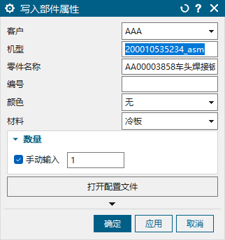
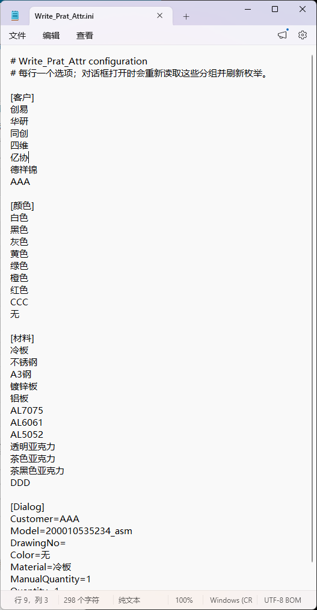

先判断：是不是该用这个功能
适合这些情况
- 只需要填写当前工作零件的客户、机型、名称、图号、颜色、材料和数量。
- 希望把同一材料同时写到当前零件内的全部实体。
- 装配中只修改一个子件，并且已经把它设成工作部件。
这些情况不要用
- 要一次修改装配中的多个零件，请用“批量写入部件属性”。
- 要统计一个零件内部相同焊件实体数量，请用“自动分层与统计焊件数量”。
- 要给实体写
sulian、编号或图层，本功能不会完成这些结果。
完成后你会看到
- 当前 PART 有客户、机型、名称、图号、颜色、材料和数量。
- 当前 PART 内每个 BODY 有相同的
cailiao材料属性。 - 装配中的其他子件保持不变。
一、最快完成一次写入
确认工作部件先在 NX 中把真正需要写属性的零件设为“工作部件”。装配导航器中仅选中或高亮一个组件并不够。
填写基本信息依次检查客户、机型、零件名称、编号、颜色和材料。
确认数量先看数量框中的自动结果。需要指定数量时，勾选“手动输入”，填写大于 0 的整数。
提交并保存点“确定”写入并关闭；需连续试改时用“应用”。完成后按 NX 正常保存部件文件。
推荐顺序：先确认材料与数量，再检查名称和编号，最后点“确定”。写入后请在 NX 属性中核对 PART 的 7 项属性和 BODY 的
cailiao，确认无误后保存 .prt 文件。装配环境请特别注意：先把真正要填写的零件设为“工作部件”。只在装配导航器里选中或高亮组件并不会改变写入对象。需要填写多个子件时，请逐个设为工作部件后使用本功能，或改用“批量写入部件属性”。
二、真实对话框与每个选项的作用
装配图与部件图环境实拍
{kind=link}
{kind=link}

装配环境和零件环境的填写方法相同；两者都只修改当前工作部件。需要一次填写多个子件时，请使用“批量写入部件属性”。
{kind=link}
| 界面项 | 用途与注意事项 |
|---|---|
| 客户 | 从配置文件的 [客户] 列表选择，写入部件属性“客户”。 |
| 机型 | 填写项目或整机型号，完成后可在部件属性“机型”中看到该值。 |
| 零件名称 | 打开对话框时默认采用当前工作部件名称，可在提交前修改；写入部件属性“名称”。 |
| 编号 | 填写零件图号或内部编号，完成后可在部件属性“图号”中看到该值。 |
| 颜色 | 从配置文件的 [颜色] 列表选择，写入部件属性“颜色”。 |
| 材料 | 从配置文件的 [材料] 列表选择。完成后，当前部件得到“材料”属性，部件内每个实体得到相同的 cailiao 属性。 |
| 数量 | 未勾选时使用自动数量；勾选“手动输入”后，可输入大于 0 的整数。数量属于当前部件，不会写到实体上。 |
| 打开配置文件 | 用系统默认文本编辑器打开 D:\UG智辉钣金插件\config\Write_Prat_Attr.ini。 |
底部按钮有什么区别
| 按钮 | 结果 |
|---|---|
| 确定 | 检查输入并写入属性；成功后关闭对话框。 |
| 应用 | 执行与“确定”相同的即时写入，但对话框保持打开，适合检查或继续修改。 |
| 取消 | 关闭对话框，不提交当前尚未应用的修改。若此前已经点过“应用”，已写入模型的内容不会被取消按钮撤销。 |
| 右上角“？” | 打开本教程。帮助文件随插件放在本机，不需要联网。 |
| 右上角回转箭头 | 属于 NX 对话框的界面重置操作；它不会执行属性写入，也不会撤销此前通过“应用”写入的模型属性。 |
重新打开时要重新检查：对话框会带出当前部件名称和上次使用过的部分选项。它们不一定就是本零件最终需要的值，提交前请逐项核对客户、机型、编号、颜色、材料和数量。
提交时机：只填写或切换选项不会改变属性；点击“应用”或“确定”后才会写入。若写入过程中出现提示，请立即检查当前部件和实体属性；已经成功写入的项目不会因为关闭提示或点“取消”而自动恢复。
三、数量应该怎么填写
自动数量（不勾选“手动输入”）
- 如果当前工作部件已经有大于 0 的“数量”，自动数量会沿用这个值。
- 没有有效旧数量时，装配环境会按当前显示装配中该零件的未抑制实例数填写。
- 单零件环境或无法得到装配数量时，自动数量显示为 1。
自动模式下数量框不可编辑。提交前请确认显示值符合本零件需要；不符合时改用手动输入。
手动数量
勾选“手动输入”后数量框可编辑，只允许输入大于 0 的整数，例如 1、2、15。空值、0、负数、小数和带单位文字都会被拒绝。
容易误解的地方：已有“数量”属性会优先于装配实例统计。如果装配里明明有 6 个，而自动数量仍显示 1，请先检查该零件原有的“数量”属性是否就是 1。
在哪里查看数量
完成后到当前 PART 的属性中查看整数属性“数量”。实体 BODY 不会出现“数量”；实体材料请查看 cailiao。如果其他公式需要引用数量表达式，请同时在 NX 表达式列表中确认实际名称。
四、怎样维护客户、颜色和材料选项
点主界面的“打开配置文件”，会打开：
D:\UG智辉钣金插件\config\Write_Prat_Attr.ini
{kind=link}

配置格式
[客户] 创易 华研 AAA [颜色] 白色 黑色 无 [材料] 冷板 不锈钢 Q235 [Dialog] Customer=AAA Model=200010535234_asm Color=无 Material=冷板 ManualQuantity=1 Quantity=1
[客户]、[颜色]、[材料]下方每行就是一个下拉选项。- 可以增加、删除或调整选项顺序，但不要删除三个方括号分组名。
[Dialog]保存上次使用的界面值，通常不要手工修改。- 建议使用 UTF-8 编码保存。截图中的文件为 UTF-8 BOM。
- 空行以及以
#或;开头的注释行会忽略；重复选项会去重。
修改后怎样生效
- 在记事本中修改选项并保存文件。
- 关闭当前“写入部件属性”对话框。
- 重新打开该功能，检查三个下拉列表是否已经更新。
若当前 PART 已有的客户、颜色或材料不在下拉列表中，请先把需要的值加入 INI 对应分组，保存文件，再关闭并重新打开对话框。
编辑配置时：先保存并关闭记事本中的修改，再回到 NX 提交属性，避免配置内容互相覆盖。只保留规定的分组和选项格式。
五、完成后会得到什么
| 位置 | 属性名 | 属性类型与来源 |
|---|---|---|
| 当前工作 PART | 客户 | 字符串，来自“客户” |
| 机型 | 字符串，来自“机型” | |
| 名称 | 字符串，来自“零件名称” | |
| 图号 | 字符串，来自“编号” | |
| 颜色 | 字符串，来自“颜色” | |
| 材料 | 字符串，来自“材料” | |
| 数量 | 整数，来自对话框显示的自动数量或手动输入值 | |
| 当前工作 PART 的每个 BODY | cailiao | 字符串，值与“材料”一致；BODY 上只写这一项 |
不会得到的结果：客户、机型、名称、图号、颜色和数量不会写到 BODY；本功能也不会填写 BODY 的 sulian、BodyID、bianhao、MIRR、Z，不会批量修改装配子件。
提交后请在 NX 属性窗口核对以上结果，并保存 .prt 文件。没有实体的部件仍可得到 7 项 PART 属性。
六、常见问题排查
| 现象 | 检查方法 |
|---|---|
| 写到了错误零件 | 执行前检查 NX 当前“工作部件”，不要只看显示部件或选中的组件。该功能写入的是工作部件。 |
| 装配中其他子件没有一起写入 | 这是正常行为。本功能不递归处理装配子件；请逐个把目标子件设为工作部件后执行。显示装配只用于自动数量统计。 |
| BODY 上没有“数量” | 这是正常行为。“数量”只属于当前 PART；BODY 只接收材料属性 cailiao。 |
| 下拉列表没有刚增加的选项 | 确认配置文件已经保存，然后关闭并重新打开对话框；打开中的对话框不会实时刷新列表。 |
| 数量和装配中的数量不同 | 先检查零件是否已有“数量”属性。有效旧属性优先；如需覆盖，勾选“手动输入”后填写正确值并提交。 |
| 数量提示错误 | 只能输入大于 0 的整数，不要输入空格、小数、负号、单位或“件”等文字。 |
| 表达式变成“数量_0” | 先确认 PART 的整数“数量”属性是否正确；若其他公式依赖表达式名称，再到表达式列表检查同名项目及引用关系。 |
| 点取消后属性没有恢复 | 若之前点过“应用”，写入已经发生；取消只放弃尚未提交的当前编辑，不负责回滚模型。 |
| 写入中途报错，但部分属性已改变 | 先检查当前 PART 和各 BODY 已有属性，修正输入或部件状态后重新执行；需要恢复时使用 NX 自身的撤销或备份。 |
| 配置文件打不开 | 检查 D:\UG智辉钣金插件\config 是否可访问，以及系统是否有关联的文本编辑器。 |
| 重启 NX 后属性消失 | 点“确定/应用”后仍要保存部件文件；若关闭部件或 NX 时选择不保存，本次填写的属性会丢失。 |
| 需要进一步定位写入失败 | 查看日志 D:\UG智辉钣金插件\logs\Write_Prat_Attr.log。 |
| 右上角帮助无内容 | 确认运行目录存在 application\Write_Prat_AttrHelp，并包含 HTML、图片和 Write_Prat_Attr.map；重启 NX 后再试。 |